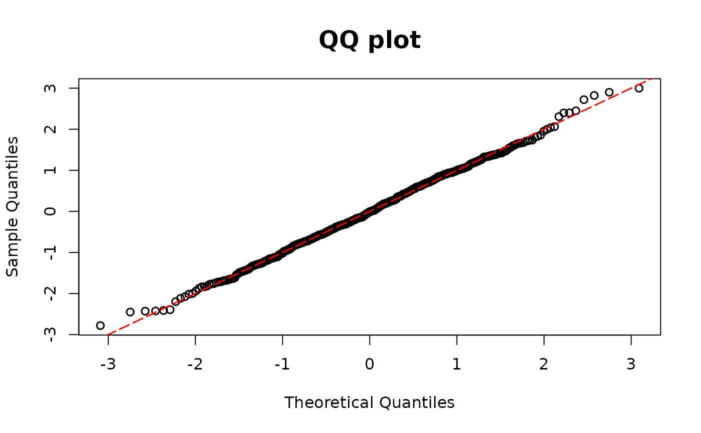
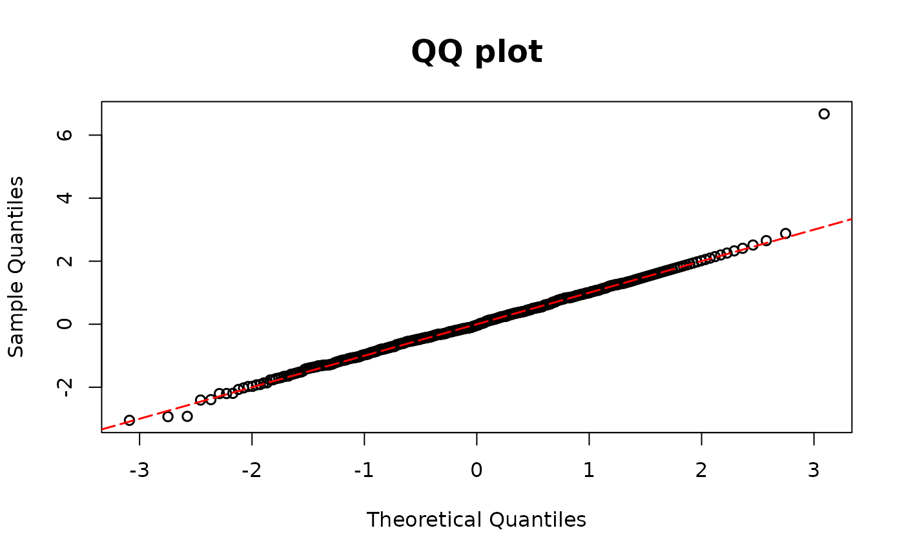
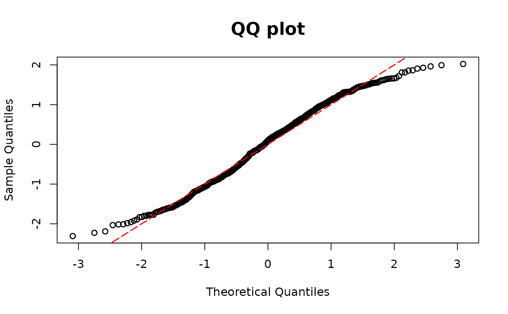

Residuals for regression models with semicontinuous outcomes
Source:R/semiconti.R
resid_semiconti.RdCalculates the DPIT residuals for regression models with semi-continuous outcomes.
The semi-continuous regression model such as
a Tweedie regression model from tweedie package or a Tobit regression model
from VGAM, AER packages is used in this function.
Arguments
- model
Model object (e.g.,
tweedie,vglm, andtobit)- plot
A logical value indicating whether or not to return QQ-plot
- scale
You can choose the scale of the residuals between
normalanduniformscales. The default scale isnormal.
Details
The DPIT residual for the \(i\)th semicontinuous observation is defined as follows: $$\hat{r}_i = \frac{\hat{F}(Y_i|X_i)}{n}\sum_{j=1}^{n}I\bigg(\hat{p}_0(X_j) \leq \hat{F}(Y_i|X_i)\bigg),$$ which has a null distribution of uniformity. \(\hat{F}\) refers to the fitted cumulative distribution function, and \(\hat{p}_0\) refers to the fitted probability of being zero.
References
Lu Yang (2024). Diagnostics for Regression Models with Semicontinuous Outcomes, Biometrics, https://arxiv.org/abs/2401.06347
Examples
## Tweedie model
library(tweedie)
library(statmod)
n <- 500
x11 <- rnorm(n)
x12 <- rnorm(n)
beta0 <- 5
beta1 <- 1
beta2 <- 1
lambda1 <- exp(beta0 + beta1 * x11 + beta2 * x12)
y1 <- rtweedie(n, mu = lambda1, xi = 1.6, phi = 10)
# Choose parameter p
# True model
model1 <-
glm(y1 ~ x11 + x12,
family = tweedie(var.power = 1.6, link.power = 0)
)
resid.tweedie <- resid_semiconti(model1)

## Tobit regression model
library(VGAM)
#> Loading required package: stats4
#> Loading required package: splines
beta13 <- 1
beta14 <- -3
beta15 <- 3
set.seed(1234)
x11 <- runif(n)
x12 <- runif(n)
lambda1 <- beta13 + beta14 * x11 + beta15 * x12
sd0 <- 0.3
yun <- rnorm(n, mean = lambda1, sd = sd0)
y <- ifelse(yun >= 0, yun, 0)
# Using VGAM package
# True model
fit1 <- vglm(formula = y ~ x11 + x12, tobit(Upper = Inf, Lower = 0, lmu = "identitylink"))
# Missing covariate
fit1miss <- vglm(formula = y ~ x11, tobit(Upper = Inf, Lower = 0, lmu = "identitylink"))
resid.tobit1 <- resid_semiconti(fit1, plot = TRUE)

resid.tobit2 <- resid_semiconti(fit1miss, plot = TRUE)
# Using AER package
library(AER)
#> Loading required package: car
#> Loading required package: carData
#>
#> Attaching package: ‘car’
#> The following object is masked from ‘package:VGAM’:
#>
#> logit
#> Loading required package: lmtest
#> Loading required package: zoo
#>
#> Attaching package: ‘zoo’
#> The following objects are masked from ‘package:base’:
#>
#> as.Date, as.Date.numeric
#>
#> Attaching package: ‘lmtest’
#> The following object is masked from ‘package:VGAM’:
#>
#> lrtest
#> Loading required package: sandwich
#> Loading required package: survival
#>
#> Attaching package: ‘AER’
#> The following object is masked from ‘package:VGAM’:
#>
#> tobit

# True model
fit2 <- tobit(y ~ x11 + x12, left = 0, right = Inf, dist = "gaussian")
# Missing covariate
fit2miss <- tobit(y ~ x11, left = 0, right = Inf, dist = "gaussian")
resid.aer1 <- resid_semiconti(fit2, plot = TRUE)
#> Error in resid_semiconti(fit2, plot = TRUE): object 'y' not found
resid.aer2 <- resid_semiconti(fit2miss, plot = TRUE)
#> Error in resid_semiconti(fit2miss, plot = TRUE): object 'y' not found